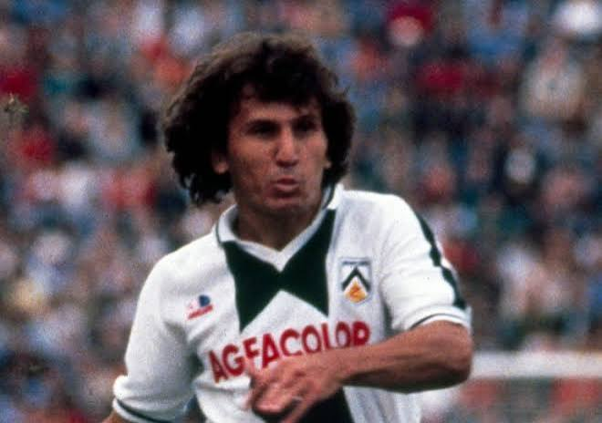

Udinese Calcio
L'Udinese è una delle società più antiche del calcio italiano, nata alla fine dell'Ottocento e diventata nel tempo uno dei club più riconoscibili del calcio di provincia italiano.
I colori bianconeri accompagnano una storia fatta di talenti scoperti e valorizzati, grandi giocatori arrivati dal mercato internazionale e una presenza quasi costante ai massimi livelli del calcio italiano.
La stagione 2026/27 rappresenta il 130º anniversario della nascita del calcio organizzato a Udine. Il club ha scelto di celebrare questa ricorrenza riportando sulla propria divisa una stella bianca, omaggio al torneo vinto nel 1896.
Palmarès
La rosa
Portieri

Maduka Okoye
Nigeria
Daniele Padelli
ItaliaDifensori

Saba Goglichidze
Georgia
Nicolò Bertola
Italia
James Abankwah
Irlanda
Matteo Palma
Italia
Juan David Arizala
Colombia
Branimir Mlačić
Croazia
Mërgim Vojvoda
Kosovo
Christian Kabasele
Belgio
Oumar Solet
Francia
Enzo Ebosse
Camerun
Alessandro Zanoli
ItaliaCentrocampisti

Sandi Lovrić
Slovenia
Oier Zarraga
Spagna
Jesper Karlström
Svezia · Capitano
Jakub Piotrowski
Polonia
Giorgi Chakvetadze
Georgia
Jürgen Ekkelenkamp
Paesi Bassi
Lennon Miller
Scotland
Unai Gómez
SpagnaAttaccanti

Idrissa Gueye
Senegal
Keinan Davis
Inghilterra
Nicolò Zaniolo
Italia
Vakoun Bayo
Costa d'AvorioAllenatore

Kosta Runjaić
Confermato alla guida dei bianconeri per la stagione 2026/27, Runjaić continua il progetto iniziato a Udine nel 2024.
Calciomercato
Entrate
Uscite
Leggende bianconere

Antonio Di Natale
2004–2016Il simbolo dell'Udinese moderna. Capocannoniere della Serie A per due volte e miglior marcatore nella storia del club.

Zico
1983–1985Il fuoriclasse brasiliano che trasformò Udine in una delle destinazioni più affascinanti del calcio mondiale.

Antonio Candreva
2007–2008Cresciuto nel vivaio bianconero, sarebbe diventato uno dei centrocampisti italiani più importanti della sua generazione.

Oliver Bierhoff
1995–1998Il centravanti tedesco esplose definitivamente in Friuli, diventando capocannoniere della Serie A nel 1997/98.
La storia
La nascita del calcio a Udine
La Società Udinese di Ginnastica e Scherma vince a Treviso il primo torneo nazionale italiano di calcio. Il titolo non viene riconosciuto ufficialmente perché la FIGC non esiste ancora.
La prima finale di Coppa Italia
L'Udinese raggiunge la finale della prima Coppa Italia della storia, perdendo 1-0 contro il Vado ai supplementari.
Il sogno dello Scudetto
I bianconeri chiudono il campionato al secondo posto, il miglior piazzamento della loro storia in Serie A. La stagione viene però seguita da una retrocessione per illecito sportivo.
Il triplete di Serie C
L'Udinese conquista il campionato di Serie C, la Coppa Italia Semiprofessionisti e la Coppa Anglo-Italiana, completando una stagione storica.
La Mitropa Cup
I bianconeri conquistano la Coppa Mitropa, aggiungendo un altro trofeo internazionale alla propria storia.
Arriva Zico
Il brasiliano Zico sbarca in Friuli e porta l'Udinese al centro dell'attenzione del calcio internazionale.
L'era Pozzo
Gianpaolo Pozzo acquista il club e avvia una gestione destinata a trasformare profondamente l'Udinese.
La Coppa Intertoto
L'Udinese conquista la Coppa Intertoto UEFA, il terzo grande trofeo internazionale della propria storia.
La prima Champions League
Con Luciano Spalletti in panchina, l'Udinese chiude quarta in Serie A e conquista per la prima volta l'accesso alla Champions League, superando lo Sporting CP nei preliminari.
L'era Runjaić
Kosta Runjaić viene scelto per guidare il nuovo progetto bianconero, riportando entusiasmo e ambizione a Udine.
130 anni di calcio
L'Udinese celebra il 130º anniversario della storica vittoria del 1896 e continua il proprio percorso in Serie A.